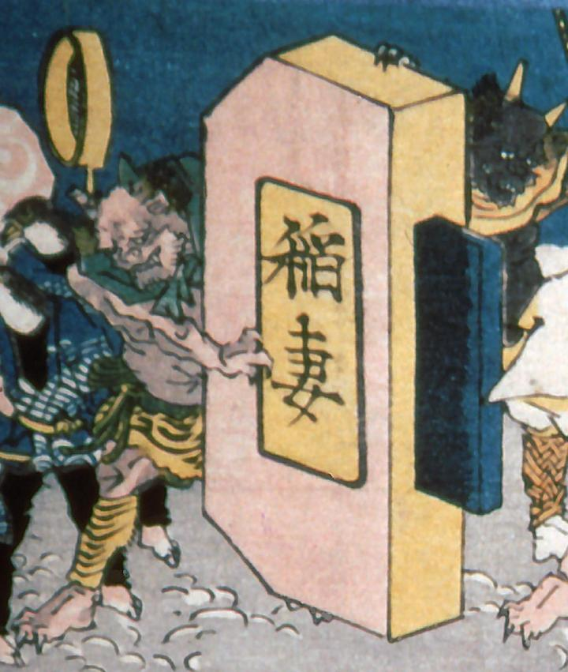

稲妻と書かれた火打ち鎌を支える鬼。2本の角に、口には鋭い牙がある。緑の襟巻きと、虎柄の腰巻、脚絆を身に着けている。
著作者：歌川貞重／出典：親書誌：A5_pushkin_0033：教訓三界図会；キョウクンサンガイズエ／日付：2011／資源識別子：A5_pushkin_0033_0003_0000
Copyright (c)2010- International Research Center for Japanese Studies, Kyoto, Japan. All rights reserved.